| Flambé Magic
Author John Britt investigates the appearance of mysterious crystals
in the glaze slop.

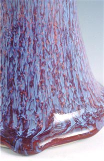While
conducting researching for my book, The
Complete Guide to High-Fire Glazes, one copper red glaze,
Jeff’s Red, always had a different fired appearance. I initially
attributed this to variations in application, speed of firing and
cooling, or variations in atmosphere. Several months later, however,
when small crystals developed in the glaze slop, I began to wonder.
I first noticed small lumps in the glaze coat on the pot which I
thought were bugs or bits of sawdust which occasionally fall into
an uncovered glaze bucket. However, during the winter while my glazes
were subject to freezing conditions in an unheated shed I noticed
that these were not lumps but were small flat hexagonal flakes of
material which grew larger in size. These flakes were actually small
crystals which floated on or just under the surface of the thickened
glaze. (Images 2, 3)
To figure out what they were, I fired several in a small bowl in
an electric kiln; opening it periodically during the firing I noticed
that they foamed intensely around 600°F (315°C), indicating
that the water of hydration was burning off. They subsequently melted
into a pool of glaze/glass around 1600°F (870°C). While
crystals placed on the side of a pot and gently heated with a propane
torch melted into a liquid and dribbled down the side. After various
enquiries, I concluded that these must be sodium borate crystals,
which precipitated from the glaze mixture as it cooled. One popular
remedy is to sieve them out, re-dissolve them in warm water and
then pour the water back into the glaze, instead I decided to glaze
and fire a pot with as many crystals on it as possible. This produced
a magnificent flambé glazed bowl; the crystals apparently
fluxed out, melting down the side creating the effect.
| 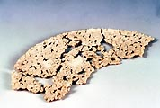 |
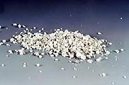 |
| Crystals found in Red Flambé slurry, 6’ x 3’
x 1/8 inch. |
Group of crystals found in Jeff’s Red glaze slurry,
less than an 1/8 inch. |
Still uncertain that the crystals were the primary cause of the
variegated flambé effect rather than the firing cycle, I
fired two similarly shaped pieces on the same shelf, one glazed
with a fresh batch and the other with the ‘crystallized’
batch (Images 15 -17). The effect was only reproduced on the piece
with the ‘crystallized’ mixture, demonstrating that
it was the cause of the variegated flambé surface.
Other glazes
Realizing that crystals were forming in the glaze slop caused
me to examine the other glazes in storage and look for patterns
in the recipes. For my book, I had mixed up approximately 400 glazes,
including copper red, shino, iron, Oribe, and crystalline glazes,
all in quart containers, which were stored in the unheated shed.
Winters in Penland, North Carolina, USA, are moderate, with temperatures
hovering around freezing, but it can easily drop to 10°F (-10°C)
or rise to 50°F (10°C). Glazes stored outside are therefore
subject to a series of freezing and thawing cycles from October
to March.
The crystals mainly occurred in glazes with borates, or with borates
and lithium carbonate, and varied from 1/2” (1.3cm) thick
by 2” (5cm) in diameter (Images 2, 3, 4, 5 and 10) to some
that were so small it felt like sand in the glaze. Others covered
the top of the 5” (13cm) container with a thin matrix of crystals.
Most were an opaque white but a number were red from iron oxide
or green from copper carbonate being caught up in the crystal (Images
7, 9). To isolate their effect, some of the larger crystals were
placed on the sides of pots and fired to cone 10 (Images 1, 6 and
8).
| 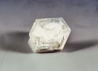 |
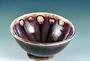 |
| Crystal found in Jeff’s Red glaze slurry, ½”
x ½” x ¼”. |
Bowl with crystal’s found in Jeff’s Red placed
on rim, reduction, Grolleg porcelain, cone 10. |
| 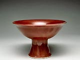 |
|
| Stem cup with fresh mix of Jeff’s Red fired in reduction
to cone 10, on Grolleg porcelain. |
Stem Cup with crystallized mix of Jeff’s Red fired in
reduction to cone 10, on Grolleg porcelain |
Since there are over 120 known borate mineral formations and I
decided to have mine analysed by X-ray Diffraction (XRD) and found
that some did contain a type of borax (Na2B4O5(OH)4·8H2O),
while others contained lithium borate hydrate (Li2B2O4·16H2O)
along with miscellaneous minerals like quartz, feldspars and other
trace materials. The crystals occurred mainly in batches of copper
red glazes, including Jeff’s Red, Mary’s Surprise, Purple
Red, Splotchy Lavender and Purple Sludge, but also in VC Matte Turquoise
and Karen’s Starshine, as well as many of my raku glazes.
Each recipe contained borates, either from natural sources (gerstley
borate or its substitutes) or frits, demonstrating that many frits
(Ferro 3134, 3185, 3195, 3191, or Pemco P-54, etc) are slightly
soluble in water.
It is evident that the flambé effect in Jeff’s Red
was caused by soluble materials migrating into crystals as the slurry
cooled. This meant that the mesh size of soluble colour enhancing
oxides, like lithium, sodium and boron, was increasing and that
new combinations of materials were forming with higher concentrations
of colorants, like copper and iron. Firing them on the pot created
areas of greater concentration of those materials.
Solubility
All ceramic materials have physical and chemical properties that
will have an effect on glazes, including mesh size, melting and
volatilisation point, surface tension, solubility, etc. One key
property is solubility, which is the ability of a material to go
into solution at a given temperature. Soluble and slightly soluble
compounds include borax, soda ash, pearl ash, Epsom salts, wood
ash, gerstley borate (and its substitutes), copper sulphate, nepheline
syenite, lithium carbonate, barium carbonate, etc. Solubility usually
varies with temperature. For example, 23.3g of sodium tetraborate
(borax) will dissolve in 100g of water at 140°F (60°C).
But at 32°F (0°C) only 1.3g will dissolve. So in a glaze
made up at 140°F (60°C) and slowly cooled toward freezing,
22g of borax will precipitate out. Also, if the volume of water
is reduced, from evaporation, some of the solute will fall out of
solution. But rather than fall to the bottom of the bucket, the
charged ionic particles can be attracted to a seed crystal (almost
any small clump of material) and, as the temperature drops, more
and more ions are attracted in a regular pattern, thus creating
a crystal. This is, undoubtedly, a dynamic process where some materials
react and fall out of solution which allows more room for other
materials to go into solution.
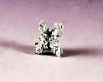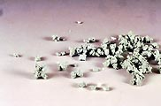
Crystal found in Karen Starshine glaze slurry, ½” x
½”x ½”.
| 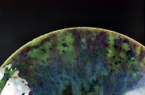 |
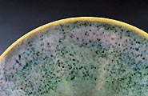 |
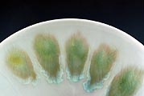 |
| Bowl with dried mix of Karen Starshine glaze, reduction, porcelain,
cone 10. (Front) |
Bowl with fresh mix of Karen Starshine glaze, reduction, Grolleg
porcelain, cone 10. (Front). |
Bowl with crystals found in Karen Starshine placed on rim,
reduction, Grolleg porcelain, cone 10, over clear glaze |
One interesting thing was that crystals did not occur in all the
glazes that contained borates and lithium oxide. Over half of the
80 copper red recipes tested had no crystals, suggesting that there
are factors influencing crystal formation other than cooling, evaporation,
and the availability of soluble borates, sodium and lithium oxide.
One possibility could be variations in pH or the glazes.
The pH value of a solution refers to its acidity or alkalinity.
This often stems from a material’s ability to go into solution
rather than stay in suspension. Since multiple materials are used
in a glaze, the pH of one material can affect the ability of other
materials to go into solution. For example, barium carbonate is
listed as insoluble in pure water but glaze slops can be slightly
acidic (flocculated) and in those cases barium carbonate can be
slightly soluble. Materials that are slightly soluble will dissolve
in the glaze slop into extremely small charged particles, or ions.
These small dissolved ions can greatly affect the condition of
the glaze slop, and may cause it to become flocculated or deflocculated
and thus more difficult to handle. Plant or wood ash, for example,
which is high in soluble salts, if used straight from the hearth
can easily deflocculate a glaze slop, making it too thin. To avoid
this and provide consistency, ash can be washed before being used.
Flocculants, like Epsom salts, cause the glaze slop to gel or thicken,
which may make the application too thick, resulting in cracking
as it dries. Flocculation and deflocculation are not bad in themselves;
they are merely conditions of a glaze slop. Some glazes are purposely
deflocculated to aid in spraying or brushing, or flocculated to
help keep particles suspended. It only becomes a problem if it is
out of control.
| 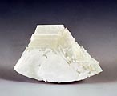 |
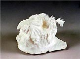 |
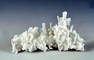 |
| Larger crystal found in slurry, 3” x 2 ½”x
½’. |
Soda ash crystals grown in saturated solution, 3” x
3” x 3”. |
Tri-sodium phosphate crystals grown in saturated solution,
3” x 1” x 1”. |
Handling soluble materials
Frits, created partly to avoid solubility problems associated
with some materials or to make toxic materials such as lead safer
to handle, are manufactured by taking soluble materials and mixing
them with clay, silica or a variety of other oxides, firing them
to melting point and pouring them into water to make them shatter
before grinding into a powder. Nevertheless, some frits, such as
the alkali, remain slightly soluble, in spite of, being labelled
as insoluble.
Soluble materials need careful attention. Those dissolved in the
glaze slop will be lost if water is poured off to thicken the glaze
slurry. They will also migrate into the bisque ware as a glazed
pot dries, which can affect the clay body because some of the fluxing
oxides will remain there. They can also make the final look of the
glaze difficult to control because the drying process often creates
uneven concentrations of these materials, depending on where the
water is evaporating. These are all sound reasons to avoid using
them.
However, by excluding them we risk missing some remarkable effects.
Carbon trap shinos and self-glazing clays like, Egyptian paste,
both depend on the migration of soluble salts to create their characteristic
look. And now we see that soluble materials in our glaze slurry
can crystallize from cooling the glaze slurry, which, because of
the uneven concentrations of oxides in the crystal formations, can
cause beautiful and unusual glaze surfaces.
| 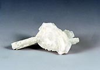 |
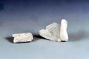 |
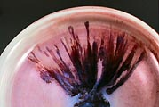 |
|
| Crystal found in Splotchy Lavender glaze slurry 2” x
1” x1”. |
Crystals found in Splotchy Lavender placed on rim, reduction,
Grolleg porcelain, cone 10. |
Bowl with crystals found in Splotchy Lavender placed on rim,
reduction, Grolleg porcelain, cone 10. |
|
Crystals will also form if glaze slurries containing soluble materials
are allowed to dry out completely. As the water evaporates the soluble
ingredients form small crystals, which may be seen on the sides
of the bucket and on the surface of the dried glaze. Once the glaze
is fully dried you can add water and allow it to rehydrate. Using
it without sieving or grinding up the chunks can result in some
interesting surfaces. I have done this with carbon trap shinos and
Karen’s Starshine (Images 13, 14). Many potters may be experiencing
this effect without realizing it, as we often allow our glazes to
dry out when not in use. Then, in a rush to glaze something, we
re-wet and apply them, often without sieving.
Crystal growth is easily demonstrated by saturating water with
a soluble material and then cooling it. I grew some examples, such
as soda ash and tri-sodium phosphate crystals (Images 11, 12). For
those interested, the book “Crystal and Crystal Growing”,
by Holden and Morrison is very helpful in explaining the crystals
and practical ways to grow them.
Glazing and firing is an already complex process and discovering
that crystals can grow in glaze slops adds yet another variable.
We know that our glaze materials and kiln atmospheres are in constant
flux but so to may be the glaze slurry itself. These crystal formations,
some virtually invisible, could be causing migration of oxides within
the slurries that dramatically affect the outcome of the glaze appearance.
Since ancient potteries did not have modern heating technologies,
it is possible that some unique historic glaze effects may have,
inadvertently, been the result of crystallization of soluble oxides
in their glaze slops.
John Britt’s book The Complete Guide to High-Fire Glazes:
Glazing and Firing at Cone 10 is published by Lark Books/Sterling
Publishing, It can be purchased from John Britt’s website
for $25.00 USD plus shipping ($5.00 U.S. and $20.00 International)
at: www.johnbrittpottery.com.
Glaze recipe chart. (Please note: * asterisks
indicate * TOXIC materials).
| . |
Splotchy Lavender |
Lavender |
Mary's Surprise |
Jeff's Red |
Red Flambe |
Karen Starshine |
VC Matte Turquoise |
| Custer Feldspar |
50 |
49 |
45.9 |
41.9 |
34 |
. |
. |
| K-200 Feldspar |
. |
. |
. |
. |
. |
51 |
. |
| Nepheline Syenite |
. |
. |
. |
. |
. |
. |
44.4 |
| Cornwall Stone |
. |
. |
. |
. |
9.7 |
. |
. |
| Whiting |
14 |
13.7 |
12.9 |
8.4 |
17.5 |
13 |
8.9 |
| Silica |
20 |
23.5 |
27.5 |
26.2 |
19.4 |
21 |
15.6 |
| Kaolin |
. |
2.1 |
. |
. |
6.8 |
. |
11.1 |
| Gerstley Borate |
. |
. |
6.4 |
8.7 |
1.9 |
6 |
11.1 |
| Frit 3134 |
7 |
4.2 |
. |
. |
. |
. |
. |
| Dolomite |
. |
. |
. |
8.7 |
. |
. |
. |
| Barium Carbonate* |
2 |
1.5 |
. |
4.4 |
. |
4 |
. |
| Strontium Carbonate |
. |
. |
1.8 |
. |
. |
. |
. |
| Lithium Carbonate* |
2 |
1.9 |
1.8 |
. |
. |
1 |
8.9 |
| Borax |
. |
. |
. |
. |
9.7 |
. |
. |
| Bone Ash |
. |
. |
. |
. |
1 |
. |
. |
| Soda Ash |
. |
. |
. |
. |
. |
4 |
. |
| Zinc Oxide* |
4 |
3.9 |
3.7 |
1.7 |
. |
. |
. |
|
. |
. |
. |
. |
. |
. |
. |
| Tin Oxide |
1 |
0.9 |
1 |
2.6 |
. |
. |
. |
| Copper Carbonate* |
0.6 |
0.5 |
0.35 |
0.5 |
0.25 |
5 |
1.7 |
| Rutile |
. |
0.1 |
. |
. |
1.5 |
. |
. |
| Titanium Dioxide |
. |
. |
. |
. |
. |
4 |
11.1 |
| Red Iron Oxide |
. |
0.2 |
. |
. |
0.5 |
. |
. |
| Bentonite |
1 |
1 |
2 |
1 |
. |
. |
. |
More Articles
|
{kind=link}
{kind=link}
{kind=link}
{kind=link}
{kind=link}
{kind=link}
{kind=link}
{kind=link}
{kind=link}
{kind=link}
{kind=link}
{kind=link}
{kind=link}
{kind=link}
{kind=link}
{kind=link}
{kind=link}